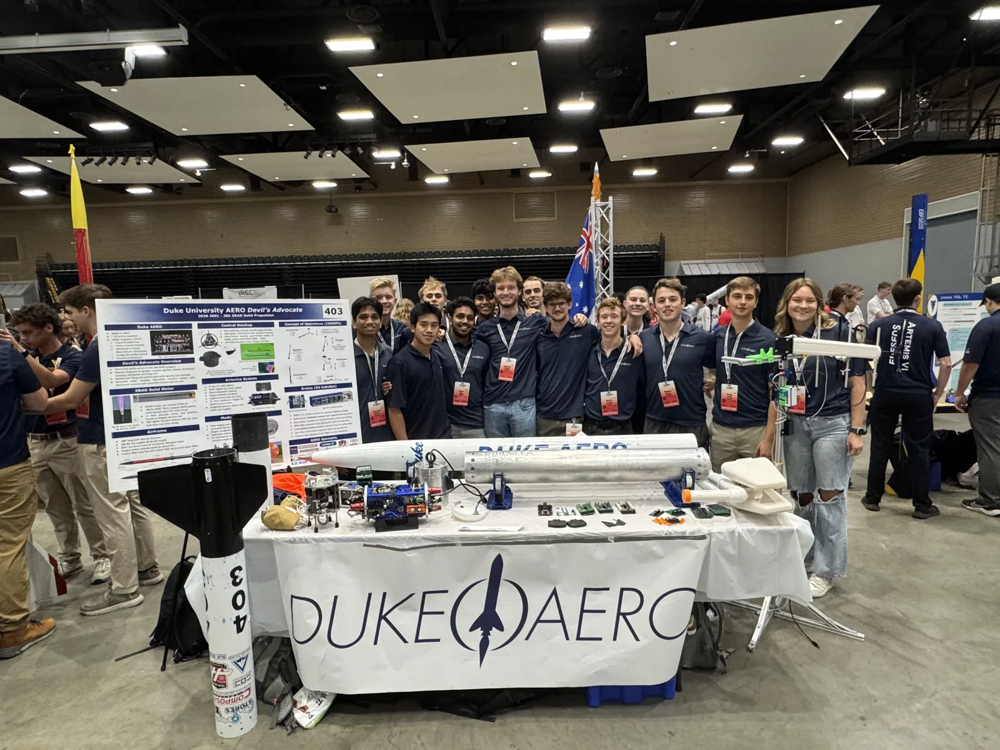
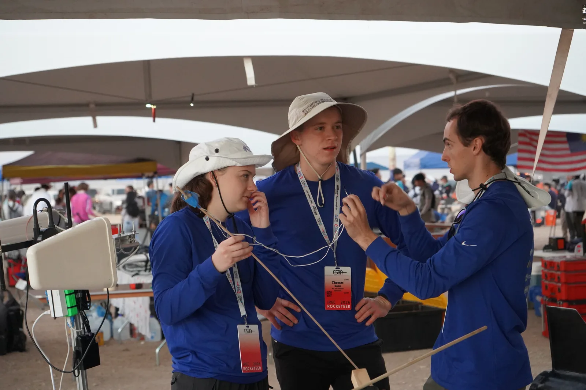

Duke Aero Club
Solid Propulsion & Structures — Duke Rocketry



Structures Lead (2026–present). Responsible for all structural components of the team's two-stage 30k SRAD rocket for IREC 2027 — airframe, fin can, staging interface, and recovery structure. Leading a 3-person structures subteam, currently recruiting at club rush. Previously (2025–26): member of the solid propulsion and structures teams, contributing across motor development, airframe fabrication, and machined hardware.
Duke Aero is Duke University's rocketry club, competing in high-power rocketry and developing student-designed and built rockets from propellant to airframe. I joined as a freshman and worked across both solid propulsion and structures before taking on Structures Lead.
My first year of work went into Devil's Advocate, Duke Aero's 3rd vehicle in the 30k-SRAD category — SRAD solid motor, 139" long, 8" internal diameter, 134 lb wet weight / 86 lb dry weight, 6061 aluminum internal structure with fiberglass airframe tubes, and forged carbon airbrake petals and canard fins. It flew at IREC 2026.
Solid Propulsion
- Helped machine the nozzle casing (6061 aluminum) on a CNC lathe — nozzle and casing survived a full-duration static hot fire
- Assisted with propellant grain mixing
- Participated in static hot fire test of the motor
Structures & Machining
- Carbon fiber body tube wraps — cut pre-impregnated carbon fiber and assisted with layup
- Machined components for the canards and air brake housing


